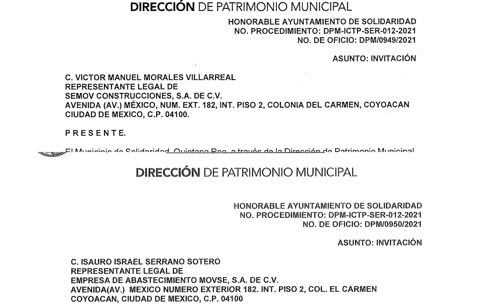
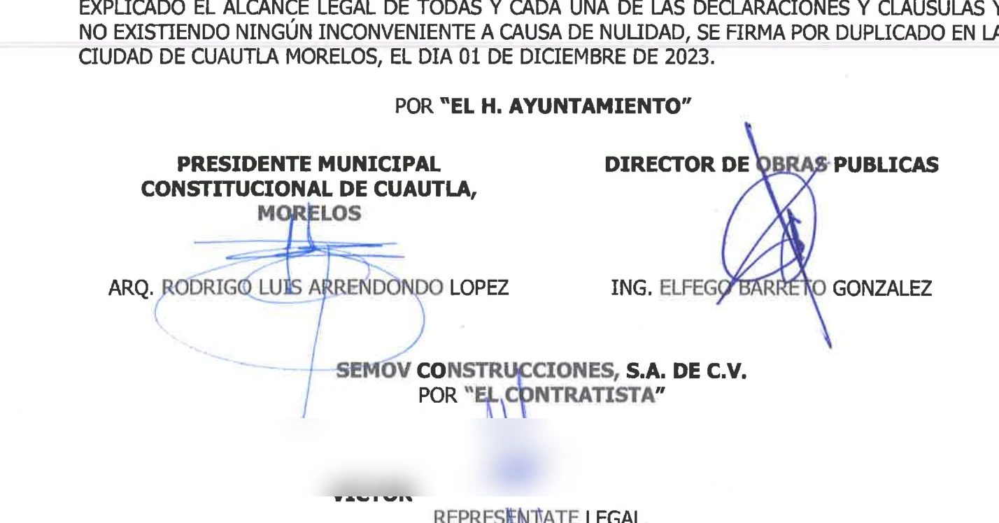
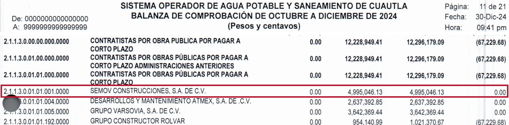
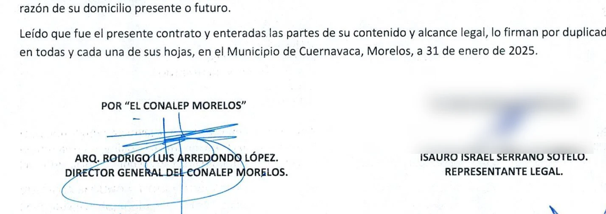

Tres empresas, una dirección
MOVSE, SEMOV y SEVIC nacieron el mismo día, ante el mismo notario y con la misma dirección en Coyoacán. Compitieron entre sí en Playa del Carmen, entraron al padrón de Cuautla en el primer mes de Rodrigo Arredondo, cobraron obra con dinero federal y en el sistema de agua, y a los 14 días de su llegada al Conalep recibieron una adjudicación directa. Al calce, la misma firma.
El 11 de marzo de 2019, en la Notaría 85 de Huixquilucan, el notario Juan Carlos Villicaña Soto firmó tres escrituras casi seguidas: la 69,664, la 69,665 y la 69,668. Así nacieron Empresa de Abastecimiento MOVSE, SEVIC Comercializadora y Distribuidora y SEMOV Construcciones. Las tres dieron el mismo domicilio: Avenida México 182, piso 2, colonia Del Carmen, en Coyoacán. Detrás de MOVSE hay dos contadores, Isauro Israel Serrano Sotelo y Víctor Manuel Morales Villarreal, socios a partes iguales; el primero es además el beneficiario final de SEMOV ante la CFE. Es un trámite que se repite cientos de veces al día en cualquier notaría del país.
Esta semana el nombre de Rodrigo Arredondo López, exalcalde de Cuautla y hoy director general del Conalep Morelos, corrió por la prensa nacional por la boda de tres días de su hija en un hotel de Yucatán. Esta columna no trata de esa fiesta. Trata de aquellas tres escrituras y de los lugares donde volvieron a aparecer.
La misma puerta
La primera coincidencia está lejos de Morelos. En mayo de 2021, la Dirección de Patrimonio del municipio de Solidaridad, en Quintana Roo, invitó a tres empresas a cotizar la reparación del equipo que limpia el sargazo. Dos de las invitaciones, la DPM/0949 y la DPM/0950, iban dirigidas al mismo domicilio de Coyoacán: una a SEMOV, firmada a nombre de Morales Villarreal, y otra a MOVSE, a nombre de Serrano Sotelo. Ganó MOVSE con 549,663 pesos. En julio, en otra invitación por casi 3 millones para talleres comunitarios, concursaron los mismos tres y volvió a ganar MOVSE.

La OCDE dedicó en 2015 un informe a las compras de la CFE, que hoy es cliente de MOVSE, y ahí describe una figura con nombre propio: la oferta de resguardo, que según el documento "ayudaría a crear una apariencia de competencia donde no existe". No es afirmación de este texto que eso haya pasado en Playa del Carmen. Lo documentado es otra cosa, más sencilla: el municipio puso a competir entre sí a dos empresas que tocaban la misma puerta. En lenguaje de tiendita, dos de los tres candidatos eran el mismo señor con distinta gorra.
Cuautla, 2022-2024
Arredondo asumió la presidencia municipal de Cuautla en enero de 2022. Ese mismo mes, según el padrón de proveedores que el ayuntamiento reporta en la Plataforma Nacional de Transparencia, quedaron dadas de alta MOVSE, SEVIC y SEMOV. Con ellas entró una cuarta, Constructora y Urbanizadora IMNCA, representada por Serrano Sotelo y con el mismo domicilio de Coyoacán.
En 2023, SEMOV ganó las licitaciones LP-05 y LP-08 para construir drenaje pluvial, pagadas con el Fondo de Infraestructura Social Municipal, que es dinero federal. En las dos, el propio ayuntamiento registró a una sola empresa en el concurso: SEMOV. Con sus convenios modificatorios y una adjudicación directa para pavimento, el total llegó a 13,973,081 pesos. Los contratos llevan la firma de Arredondo como presidente municipal y como presidente del Comité de Obra Pública.

Al calce de los contratos de las dos instituciones está la misma firma.
Antes de que terminara ese gobierno, el sistema de agua potable de Cuautla registró en su balanza de octubre a diciembre de 2024 movimientos por 4,995,046 pesos a favor de SEMOV, en la cuenta de contratistas por obra pública, saldados en el mismo trimestre. La misma balanza deja a MOVSE un saldo por cobrar de 130,987 pesos. El documento no dice qué obra fue.

Lo que muestran y lo que no
Las actas constitutivas de las tres empresas, que es donde constaría la lista completa de sus socios, no las tengo todavía. En los documentos que sí tengo, que son padrones, contratos, la relación de accionistas que MOVSE entregó a la CFE y la lista de aportantes de su campaña de 2021, Arredondo no aparece como socio, apoderado ni representante. Las empresas tampoco figuran en las listas del SAT de contribuyentes que simulan operaciones. Lo que los papeles sí muestran son fechas. De los 136 millones que el grupo ha contratado, unos 107 se firmaron de 2022 en adelante, con Arredondo ya en funciones. Eso incluye a clientes donde él nunca tuvo cargo: la CFE le contrató a MOVSE cerca de 58 millones en esos años y Playa del Carmen, 26.5 millones solo en 2024. El grupo, por su parte, no nació con él, porque en 2021, antes de que llegara a Cuautla, ya había facturado cerca de 29 millones entre Quintana Roo y la CFE.
En Morelos el mapa es más estrecho. Donde Arredondo firma, el grupo cobra. Donde él no tiene mando, en todo lo que pude revisar, no aparece. Entró al padrón de Cuautla el mismo mes en que él llegó a la presidencia, ganó dos licitaciones en las que fue la única concursante registrada y en el último trimestre de su gobierno aparece en las cuentas del sistema de agua potable. No es afirmación de este texto que alguien haya dirigido esos contratos. La pregunta es por qué una empresa de Coyoacán, sin otro cliente en el estado, llega a Morelos cuando él llega.
Catorce días
El nombramiento de Arredondo como director general del Conalep Morelos surtió efecto el 16 de enero de 2025. El 30 de enero, el Conalep adjudicó directo a MOVSE el contrato CONALEP/SERV/009/2025, de marketing y creación de contenido, por 464,000 pesos. Luego vino el 030/2025, por 696,000. En su respuesta a una solicitud de Morelos Rinde Cuentas, el propio Conalep reconoce pagos por 1,158,000 pesos con cargo a la partida de comunicación social, cuyo presupuesto aprobado era de cero. MOVSE no figura en su padrón de proveedores.

Es una empresa de abastecimiento vendiendo marketing a una escuela técnica. En el registro de prestadoras de servicios especializados de la Secretaría del Trabajo, MOVSE tiene anotada desde mayo de 2024 una sola actividad: fumigación. A la CFE le declaró en julio de 2025 que su acta constitutiva no tenía reformas, aunque un contrato de Playa del Carmen consigna que en marzo de 2021 protocolizó la ampliación de su objeto social.
En Cuautla firmó el presidente municipal; en el Conalep, el director general. Al calce de los contratos de las dos instituciones está la misma firma: Rodrigo Luis Arredondo López.
Hagamos memoria Ver el expediente →
- Plataforma Nacional de Transparencia, consulta pública y buscador de contratos (búsqueda por RFC: MOVSE EAM190311L56, SEMOV SCO190311SK6, SEVIC SCD1903115M7). Consulta del 19 y 20 de noviembre de 2026: consultapublicamx.plataformadetransparencia.org.mx/vut-web/faces/view/consultaPublica.xhtml#inicio
- Municipio de Solidaridad, Q. Roo. Invitaciones DPM/0949/2021 y DPM/0950/2021 (procedimiento DPM-ICTP-SER-012-2021) y contrato DPM/ICTP/SER/015/2021, publicados en su portal de transparencia.
- Ayuntamiento de Cuautla. Padrón de personas proveedoras y contratistas (enero de 2022); contratos CUAU-OP-FIII-LP-05/2023, CUAU-OP-FIII-LP-08/2023 y CUAU-OP-FIII-AD-07/2023 con sus convenios. Plataforma Nacional de Transparencia.
- Sistema Operador de Agua Potable y Saneamiento de Cuautla. Cuarto informe trimestral 2024, balanza de comprobación de octubre a diciembre de 2024, hoja 11 de 21: assets.zyrosite.com/WmR2HZuLg18YIAga/cuarto-informe-trimestral-2024-NZ1hOQQVmZTQi3pI.pdf
- Conalep Morelos. Contratos CONALEP/SERV/009/2025 y CONALEP/SERV/030/2025; padrón de proveedores 2025; respuesta a la solicitud con folio 170353926000002 (oficio DGCM/DJ/UT/205/2026). Plataforma Nacional de Transparencia.
- Secretaría del Trabajo y Previsión Social. Registro de Prestadoras de Servicios Especializados u Obras Especializadas (REPSE), folio 172660: repse.stps.gob.mx
- CFE Distribución. Ofertas técnicas y relación de accionistas de Empresa de Abastecimiento MOVSE (procedimiento CFE-0109-ADCON-0004-2025); beneficiario final de SEMOV en CFE-0109-ADAAA-0010-2025. Plataforma Nacional de Transparencia.
- SAT. Listado completo de contribuyentes del artículo 69-B del Código Fiscal de la Federación: omawww.sat.gob.mx/cifras_sat/Documents/Listado_Completo_69-B.csv
- OCDE (2015). Combate a la colusión en los procesos de contratación pública en México. Informe analítico del Secretariado sobre el cumplimiento de la legislación, regulaciones y prácticas de la CFE con las mejores prácticas de la OCDE, p. 20: imco.org.mx/wp-content/uploads/2015/01/CombateColusi%C3%B3nContrataci%C3%B3nP%C3%BAblica-M%C3%A9xico-InformeCFE-2015.pdf
- Diario de Yucatán (19 de noviembre de 2026), con información de Reforma, sobre la boda en el hotel Chablé Yucatán: yucatan.com.mx/merida/2026/11/19/funcionario-morena-celebra-lujosa-boda-hija-yucatan-habitaciones-96-mil-fotos.html
Las ligas van a la vista para que cualquiera compruebe por su cuenta. Si alguna dejó de resolver, escríbenos y la reponemos.
SRVO